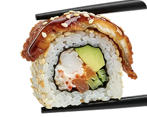
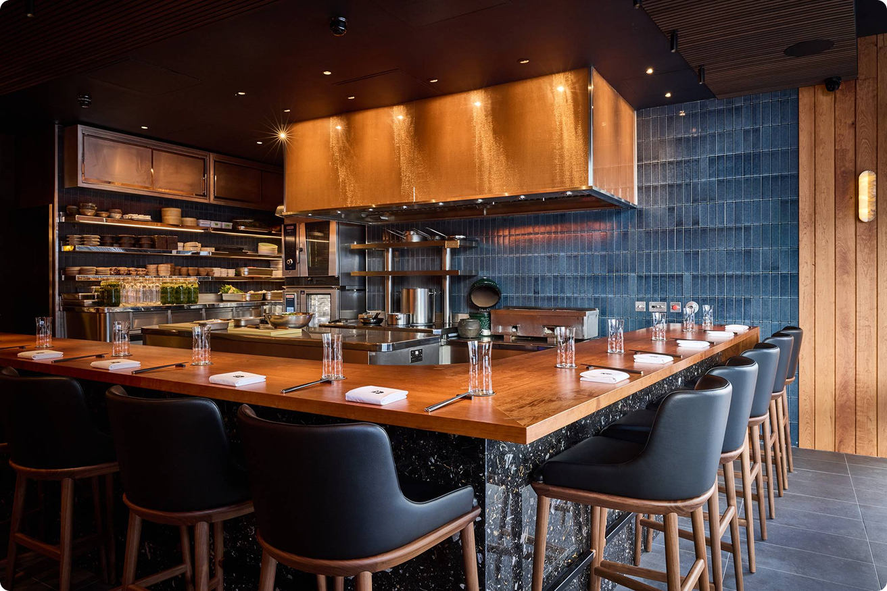
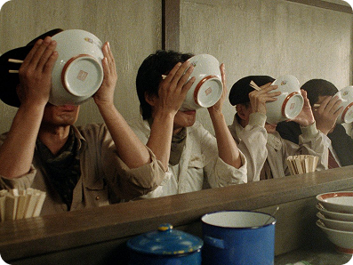
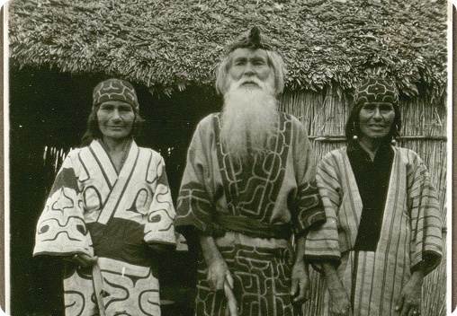
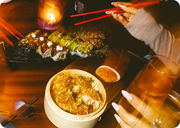
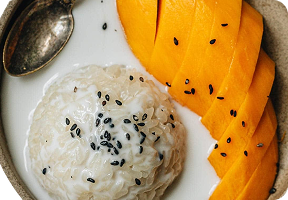
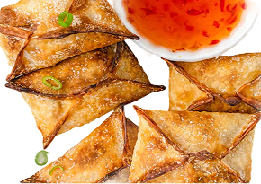

Japanese leads our menu because sushi is our craft.

At Ezo, we cook Japanese, Vietnamese, and Thai dishes the way we were taught, name them correctly, and tell you where they come from.

Ezo began with two cooks at a culinary institute who could not stop talking about food. Michael Chen, a third-generation Japanese American, trained under sushi masters in Los Angeles and Tokyo. Daniel Martinez spent five years studying cooking across Asia, including kaiseki in Kyoto and professional kitchens in Vietnam and Thailand. Together they opened Ezo to bring all three cuisines to Long Island.

Ezo is a historical name for Hokkaido, the northern island of Japan. Michael’s grandparents emigrated from northern Japan, and the name carries that family story. Hokkaido is also the homeland of the Ainu, an Indigenous people with their own language and culture. We are still learning about their history, and we want to honor it with care, not decoration.
Our neighborhood has long loved takeout and hibachi, and we wanted to add something new. That means sushi made with premium fish, phở simmered with care, and Thai dishes cooked the way Daniel learned them. We keep each cuisine distinct and tell you where every dish comes from. Whether this is your first bowl of phở or your thousandth, you are welcome here.

“We want you to know what you’re eating and where it comes from.”

Japanese leads our menu because sushi is our craft.

Vietnamese and Thai each have their own page, with equal space and respect.

Some dishes come from other traditions. Crab Rangoon is an American-Chinese classic, Peking duck is Chinese, and poke is Hawaiian. We label each one.